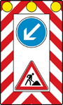
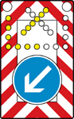

| 1
| 2
| 3
|
| lfd. Nr.
| Zeichen
| Ge- oder Verbot
Erläuterungen
|
| A b s c h n i t t 1
|
| E i n r i c h t u n g e n z u r K e n n z e i c h n u n g v o n A r b e i t s - u n d U n f a l l s t e l l e n o d e r s o n s t i g e n v o r ü b e r g e h e n d e n H i n d e r n i s s e n
|
|
| 1
| Zeichen 600
Absperrschranke
|
|
| 2
| Zeichen 605
Leitbake
Pfeilbake Schraffenbake
|
|
| 3
| Zeichen 628
Leitschwelle
mit Pfeilbake mit Schraffenbake
|
|
| 4
| Zeichen 629
Leitbord
mit Pfeilbake mit Schraffenbake
|
|
| 5
| Zeichen 610
Leitkegel
|
|
| 6
| Zeichen 615

Fahrbare Absperrtafel
|
|
| 7
| Zeichen 616

Fahrbare Absperrtafel mit Blinkpfeil
|
|
| zu 1 bis 7
|
| Ge- oder Verbot
Die Einrichtungen verbieten das Befahren der so gekennzeichneten
Straßenfläche und leiten den Verkehr an dieser
Fläche vorbei.
Erläuterung
- Warnleuchten an diesen Einrichtungen zeigen rotes
Licht, wenn die ganze Fahrbahn gesperrt ist, sonst gelbes
Licht oder gelbes Blinklicht.
- Zusammen mit der Absperrtafel können überfahrbare
Warnschwellen verwendet sein, die quer zur Fahrtrichtung
vor der Absperrtafel ausgelegt sind.
|
| A b s c h n i t t 2
|
| E i n r i c h t u n g e n z u r K e n n z e i c h n u n g v o n d a u e r h a f t e n H i n d e r n i s s e n o d e r s o n s t i g e n g e f ä h r l i c h e n S t e l l e n
|
|
| 8
| Zeichen 625
Richtungstafel in Kurven
| Die Richtungstafel in Kurven kann auch in aufgelöster Form angebracht sein.
|
| 9
| Zeichen 626
Leitplatte
|
|
| 10
| Zeichen 627
Leitmal
| Leitmale kennzeichnen in der Regel den Verkehr einschränkende Gegenstände. Ihre Ausführung richtet sich nach der senkrechten, waagerechten oder gewölbten Anbringung beispielsweise an Bauwerken, Bauteilen und Gerüsten.
|
| A b s c h n i t t 3
|
| E i n r i c h t u n g z u r K e n n z e i c h n u n g d e s S t r a ß e n v e r l a u f s
|
|
| 11
| Zeichen 620
Leitpfosten
(links) (rechts)
| Um den Verlauf der Straße kenntlich zu machen, können an den Straßenseiten Leitpfosten in der Regel im Abstand von 50 m und in Kurven verdichtet stehen. |
| A b s c h n i t t 4
|
| W a r n t a f e l z u r K e n n z e i c h n u n g v o n F a h r z e u g e n u n d A n h ä n g e r n b e i D u n k e l h e i t
|
|
| 12
| Zeichen 630
Parkwarntafel
|
|